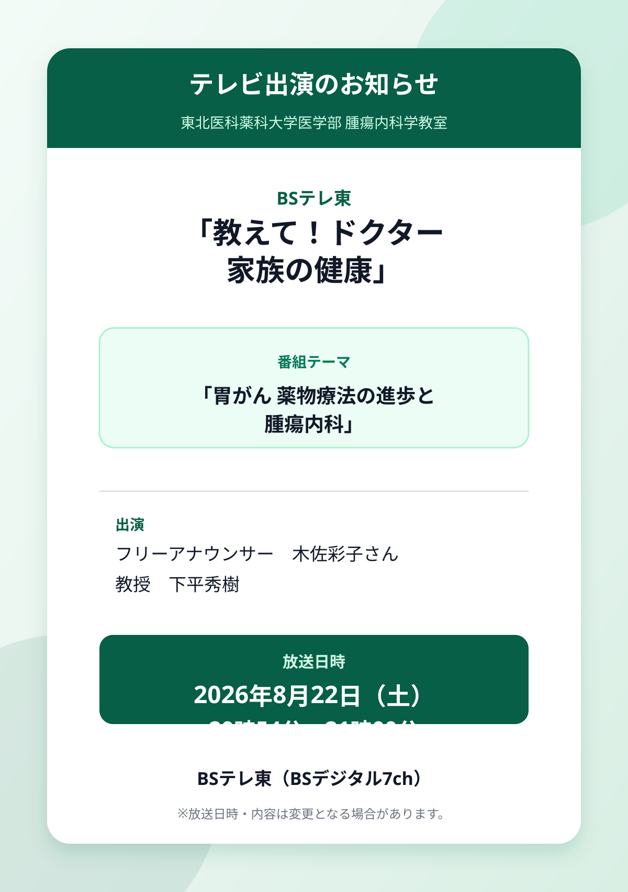

テレビ出演のお知らせ
当科の下平秀樹教授が、BSテレ東「教えて！ドクター 家族の健康」に出演します。
今回の番組テーマは、
「胃がん 薬物療法の進歩と腫瘍内科」です。
胃がんの薬物療法の進歩と、腫瘍内科が診療で果たす役割について紹介します。

番組概要
- 番組名
- BSテレ東「教えて！ドクター 家族の健康」
- 番組テーマ
- 「胃がん 薬物療法の進歩と腫瘍内科」
- 出演
- フリーアナウンサー 木佐彩子さん
東北医科薬科大学医学部 腫瘍内科学教室 教授 下平秀樹 - 放送日時
- 放送局
- BSテレ東（BSデジタル7ch）
ぜひご覧ください。
※放送日時・内容は変更となる場合があります。